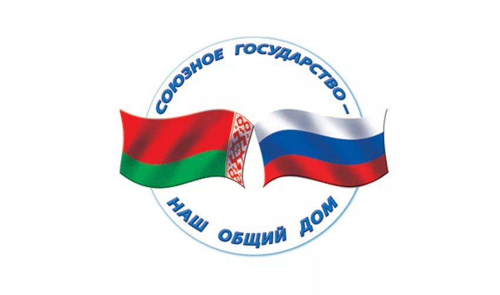
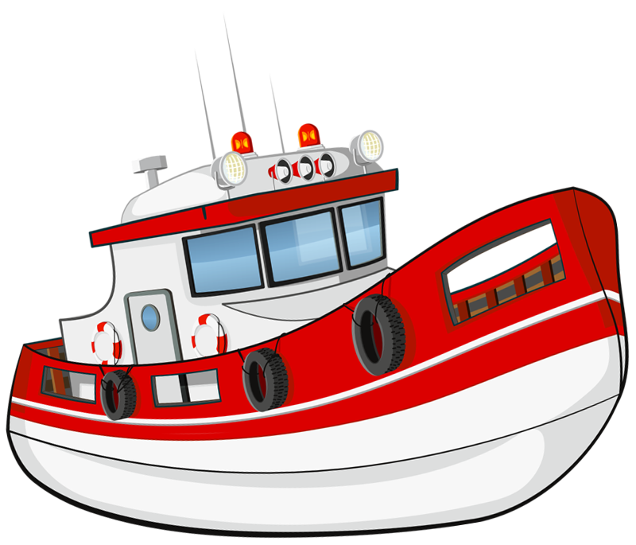

Создание Союзного государства Беларуси и России вывело научное и производственное сотрудничество обеих стран в космической сфере на качественно новый уровень. Подтверждение тому — успешная реализация ряда совместных программ.
Достижения Союзного государства:
-
Восстановление и эффективное развитие научно ‑ технических и экономических связей в космической деятельности, совместная разработка конкурентоспособных технологий и их применение для создания новых образцов космических средств.
-
Разработка и организация использования перспективных космических средств и технологий в интересах развития Союзного государства. Заложена основа Белорусской космической системы дистанционного зондирования Земли.
-
Созданы аппаратно ‑ программные комплексы тематической обработки космической информации. Завершен первый этап создания в Беларуси собственной системы дистанционного зондирования Земли.
-
Разработаны нанотехнологии создания материалов, устройств и систем космической техники и их адаптация к другим отраслям техники и массовому производству.
-
Выработаны стандарты, связанные с производством космической техники, обеспечена их гармонизация с международными стандартами.
-
Создание средств, технологий и программных комплексов в интересах повышения надежности, работоспособности и живучести малогабаритных космических средств дистанционного зондирования Земли.
-
Разработка технических решений уменьшения массы, габаритов и энергопотребления элементов, устройств и систем ракетно‑космической техники.
-
Продолжение направления, заданного «Стандартизацией ‑ СГ»: создание единых стандартов, программно ‑ технических средств и методического обеспечения для совершенствования системы доведения до потребителей космической информации дистанционного зондирования Земли и продуктов ее обработки.
-
Разработка базовых элементов орбитальных и наземных средств для будущих многоспутниковых группировок малоразмерных космических аппаратов наблюдения земной поверхности и околоземного космического пространства.